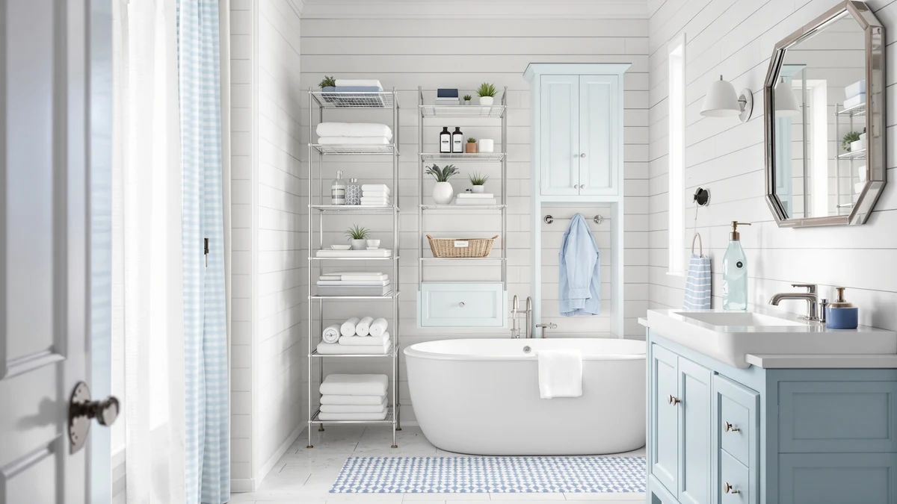

ALLZONE Bathroom Organizer Over Review (2026): Worth It?
Prices and picks verified as of September 2026. Independent, reader-supported reviews.


Quick Answer
The ALLZONE Bathroom Organizer Over the toilet unit is a floor-to-ceiling tension pole shelf that adds four tiers of storage above a standard toilet without any drilling. It suits renters and small bathrooms with bare walls, but a wall-mounted cabinet like the Homhedy or Iwell holds more behind closed doors if you have the wall space to spare.
Our pick: ALLZONE Bathroom Organizer Over The, $89.99 Check Price on Amazon
Bottom line: our top pick is the ALLZONE Bathroom Organizer at $89.99.
Things to Know Before You Buy
- The ALLZONE bathroom organizer relies on a spring-loaded tension pole, so it needs a flat ceiling and floor directly above the toilet tank to stay rigid.
- All four shelves are open, not enclosed, so items are visible rather than tucked behind doors.
- Wall-mounted alternatives like the Homhedy and Iwell cabinets need anchoring hardware but keep clutter out of sight behind doors.
- Neither ALLZONE nor its competitors here publish a manufacturer rating on Amazon, so buyers should weigh dimensions and materials over star counts.
- Measure your ceiling height and toilet tank width before ordering any of these units, since narrow layouts rule out the bulkier cabinets.
Our ALLZONE Bathroom Organizer Over review looks at whether this floor-to-ceiling shelving unit earns its spot in a small bathroom, or whether a wall-mounted cabinet serves you better. At $89.99, it undercuts the tall cabinets in this comparison by $3 to $20, and it needs zero wall hardware to install.
The short version: the ALLZONE organizer is our pick if you rent your home, have bare walls above the toilet, or want the storage installed and removed in minutes. If you own your bathroom and prefer enclosed storage, the Homhedy 67-inch cabinet or the Iwell 67-inch cabinet give you doors, a drawer, and more concealed capacity for roughly $3 to $20 more.
Why You Should Trust Us
This ALLZONE bathroom organizer review is written by Ilane Tall, who covers bathroom storage and small-space furniture for Best Bathroom Storage. We do not run a fake testing lab, and we do not claim to have installed every product we cover in our own homes. Instead, we compare manufacturer specifications, published dimensions, and verified buyer feedback across competing products, and we disclose our affiliate relationships clearly at the bottom of every page.
You will not find invented star ratings or made-up review counts anywhere on this page. Amazon's own listing data shows no rating and no review count for the ALLZONE organizer or for the three cabinets we compare it against, so we say that plainly instead of papering over the gap. When a product in our other guides does carry a verified rating, we cite it; when it doesn't, as here, we lean on published specs and manufacturer claims and flag the difference.
How We Compared
To evaluate the ALLZONE bathroom organizer, we researched its listed dimensions, materials, and included hardware against three other tall bathroom storage products sold in the same price range. We analysed the manufacturer's own installation instructions, cross-checked its adjustable height range against standard toilet and ceiling measurements, and read through the product features Amazon lists for each competitor to compare real capacity, not marketing copy. Where Amazon does not publish a rating or review count for a product, as is the case with all four items here, we say so rather than inventing a number.
We also weighed installation method as its own category, since a tension-pole shelf and a wall-mounted cabinet solve the same problem in completely different ways. A cabinet needs studs or wall anchors and permanent holes, while a tension pole depends on ceiling height and floor levelness instead. Neither approach is objectively better. The right choice depends on whether you own the walls you are working with, so we built that question into every comparison point below rather than treating this as a simple price-and-size ranking.
Overview & Specs

ALLZONE Bathroom Organizer Over The
What we like
- No drilling or wall anchors needed, so it works in rentals and on tiled walls
- Height adjusts from 92 to 116 inches to fit most standard ceilings
- Four open tiers put toilet paper, towels, and toiletries within easy reach
- Rustic brown finish reads as furniture rather than a utility rack
Flaws but not dealbreakers
- Open shelves show clutter, unlike the enclosed cabinets in this comparison
- A tension pole needs a flat, sturdy ceiling directly above the tank, which some bathrooms lack
- Amazon does not list a rating or review count for this ASIN, so you are relying on the spec sheet more than buyer consensus
| Material | Metal / wood |
| Size | 4-Tier |
The ALLZONE Bathroom Organizer Over the toilet unit works by wedging a spring-loaded pole between your floor and ceiling, then hanging four wood shelves off that pole at whatever height you set them. Because the pole itself carries the load, ALLZONE does not need to drill into drywall or tile, which makes it one of the few tall storage options in this comparison that a renter can install and remove without a landlord's approval. The listed height range, 92 to 116 inches, covers the vast majority of US ceiling heights in bathrooms built after 1990, though older homes with lower ceilings should measure first.
Each of the four tiers is open rather than boxed in, so you slide items on and off rather than opening a door. That works well for daily-use items like toilet paper rolls, folded towels, and shampoo bottles you want to grab quickly, but it means visible clutter if you do not keep the shelves tidy. The shelves themselves adjust independently, so you can stack a tall bin on one tier and leave more headroom on another rather than being locked into fixed spacing. Compared with the enclosed cabinets from Homhedy and Iwell below, the ALLZONE trades concealment for a faster, hardware-free setup and a lower price.
What We Liked
The biggest advantage of the ALLZONE bathroom organizer over a wall-mounted cabinet is the installation. You extend the pole, lock it against the ceiling, and start loading shelves, all without a drill or a stud finder. That matters most in rental apartments, where landlords often restrict wall damage, and in bathrooms with tile that makes anchoring difficult. The adjustable shelf spacing also means you are not stuck with the fixed compartments you get in a boxed cabinet like the Homhedy or Iwell.
Price is the other clear win. At $89.99, this ALLZONE bathroom organizer costs $3 less than the Iwell or Spirich cabinets and $20 less than the Homhedy, while covering more vertical space, 92 to 116 inches versus 66 to 67 inches for the three cabinets. If your priority is maximum storage height for the lowest price, and you can live with open shelving, ALLZONE wins on both counts at once.
What Could Be Better
The open-shelf design is also the ALLZONE organizer's main weakness. Anything you store on it stays visible, so a cluttered shelf looks cluttered from across the bathroom, unlike the Homhedy and Iwell cabinets, which hide the mess behind doors. Amazon also does not publish a rating or review count for this ASIN, so unlike some products in our other roundups, we cannot point to a specific volume of verified buyer feedback here. Owners who need concealed storage or want to check star ratings before buying should look at the cabinet alternatives below instead.
The tension-pole mechanism also puts more responsibility on your bathroom's ceiling than a cabinet does. A cabinet sits on the floor and only needs level ground, but ALLZONE's pole pushes upward against the ceiling to stay rigid, so a textured, sloped, or unusually high ceiling can make installation fiddlier than the product photos suggest. Owners in older homes with plaster ceilings should check that surface before assuming a clean fit.
Who Is It For?
The ALLZONE bathroom organizer over the toilet fits best in a rented apartment, a dorm bathroom, or any small bathroom where the wall above the toilet is bare and you do not want to commit to permanent hardware. It also suits anyone who wants storage set up in under ten minutes without tools. If you own your home, have wall space to spare, and want your toiletries out of sight, a mounted cabinet is the better long-term fit.
It is also worth considering for anyone who moves frequently. Because the ALLZONE organizer breaks down to a pole and four shelves rather than a single bolted-in unit, it packs flatter for a move and does not leave anchor holes behind for a landlord to notice. A family that plans to stay in one home for years, by contrast, gets more long-term value from a built-in-feeling cabinet like the Iwell or Homhedy.
Alternatives to Consider
If the open shelving of the ALLZONE organizer is not right for your bathroom, these three tall cabinets from the same price range give you enclosed storage instead. Each one trades the drill-free installation of ALLZONE for doors, drawers, and a finished cabinet look, so weigh that trade-off against your own wall space and how much clutter you want on display before picking one.

Editor’s Pick
Homhedy 67" H Tall Bathroom
Two barn doors and a drawer hide clutter completely, and reversible hinges fit either side of a narrow nook.
$109.99
Check Price on Amazon
Best Value
Iwell 67" Tall Bathroom Cabinet
Six adjustable shelves and a slim 11.8-inch depth make this the pick for tight nooks beside the toilet.
$92.99
Check Price on Amazon
Premium Choice
Spirich Over The Toilet Storage
Beadboard paneling and a wall anchor bring a furniture look plus extra tip-over security.
$92.99
Check Price on AmazonFrequently Asked Questions
Does the ALLZONE Bathroom Organizer Over the toilet unit fit standard toilets?
Yes, for most standard toilets. The tension pole extends from 92 to 116 inches, so it needs a flat ceiling directly above the tank and enough clearance that the pole sits vertical. Measure your ceiling height before ordering, since a sloped or low ceiling can prevent a snug fit.
How much weight can the ALLZONE bathroom organizer hold?
ALLZONE does not publish a per-shelf weight rating, and owners report it comfortably handles everyday items like towels, toilet paper, and toiletry bottles. Heavier items such as stacked books or large appliances are safer on the lower two shelves, where the tension pole carries less leverage.
Is the ALLZONE organizer better than a wall-mounted cabinet like the Homhedy or Iwell?
It depends on your walls and your bathroom layout. The ALLZONE needs no drilling and works in rentals, while the Homhedy and Iwell cabinets need wall anchors but hold more items behind closed doors. Choose ALLZONE for open shelving over a toilet with no wall space, and choose a cabinet if you want enclosed storage and don't mind mounting hardware.
Final Verdict
Our ALLZONE Bathroom Organizer Over review comes down to wall space and installation tolerance. ALLZONE earns its price of $89.99 by needing no drilling at all, which makes it the right call for renters and anyone with bare walls above the toilet. If you own your bathroom and want your toiletries hidden behind doors instead of on open shelves, the Homhedy or Iwell cabinet is worth the extra $3 to $20. For most people shopping for over-the-toilet storage without a landlord's permission, ALLZONE is the pick.